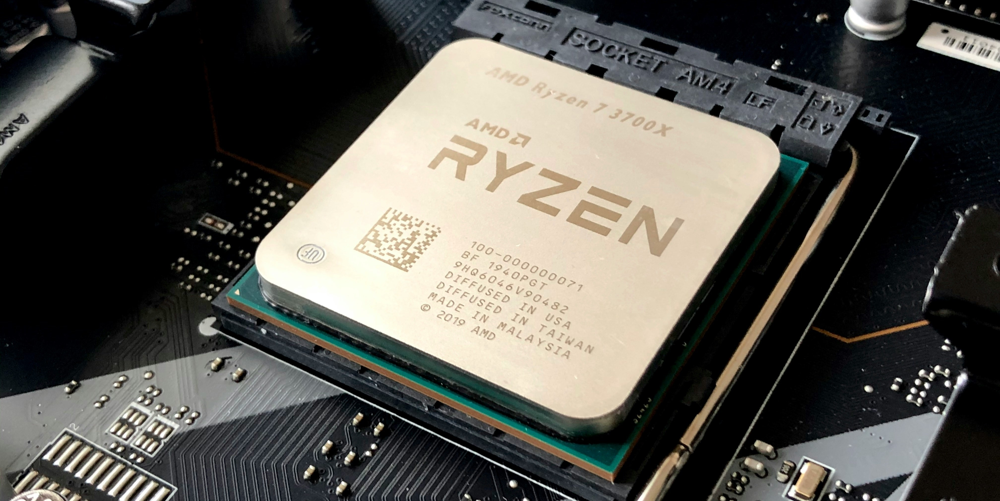
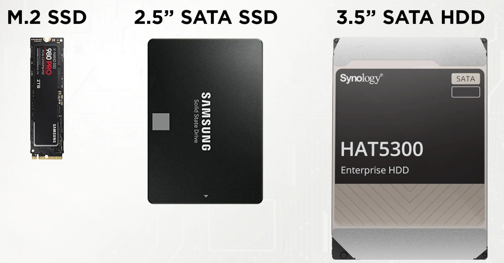
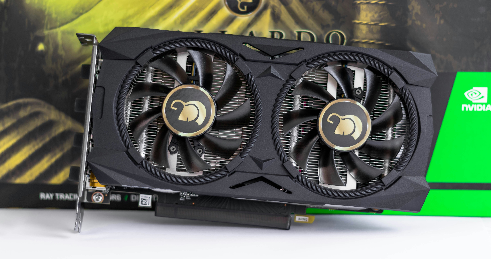

Which PC parts to pick for your Desktop
This short guide will explain the most basic aspects when selecting PC components, in order to make the process of assembling a computer a little more familiar.
Computers are known to break down when we most need them, sometimes we don't know what its causing the slowdowns or graphical problems, but sometimes it can be as easy as a faulty drive or old driver. It can be really long or expensive to fix your PC in a shop.
Desktop computers prioritize reparability and performance over size and efficiency. Their ease of repair and upgradeability is a significant advantage, making them not only more user-friendly for maintenance but also simpler to customize and build according to individual needs. When building a PC you should consider your maximum budget, the performance you expect of the pc and its size, known as form-factor. To build a computer you'll need these components/parts:
Processor (CPU)
When selecting your CPU, you typically have two major brands to choose from: Intel and AMD. Both companies release a variety of processors annually, targeting different price points and performance levels. Understanding the naming conventions of these processors can help you make an informed decision.
Intel
Intel processors are generally classified into series such as i3, i5, i7, and i9, with each series representing a different tier of performance. For example, consider the Intel Core i5-12400F:
Series Identifier (i5): Indicates the performance tier. We recommend choosing from the i3, i5, i7, or i9 series.
Generation (12): The first digit(s) after the series identifier show the generation of the processor. In this example, the processor belongs to the 12th generation.
Model Number (400): The subsequent digits provide an indication of the performance within the generation. Generally, a higher number denotes better performance compared to other models of the same generation.
Suffix Letter (F): The letter at the end indicates specific features or capabilities. Here, 'F' means the processor does not have integrated graphics, so you'll need to purchase a separate graphics card (GPU).
AMD
AMD's naming conventions follow a similar logic but with their own specific structure. For instance, an AMD Ryzen 5 5600X can be broken down as follows:
Series Identifier (Ryzen 5): Indicates the performance tier, similar to Intel’s i3, i5, i7, and i9 series.
Generation (5): The first digit in the model number represents the generation, which in this case is the 5th generation.
Model Number (600) The numbers following the generation indicate the performance tier within that generation, with higher numbers generally offering better performance.
Suffix Letter (X): This denotes specific features or enhancements. 'X' typically means higher performance compared to models without a suffix.
General Recommendations
Latest Generations: Typically, the processors available at most retailers belong to the latest two generations from each brand. Opting for newer generations can provide improved performance, energy efficiency, and support for the latest technologies. Series Selection: For most users, we recommend choosing from the i3, i5, i7, and i9 series for Intel, and Ryzen 3, Ryzen 5, Ryzen 7, and Ryzen 9 series for AMD. These series offer a good balance of performance and value. Graphics Considerations: If you choose a processor without integrated graphics (such as Intel models with an 'F' suffix or AMD models without a 'G' suffix), you'll need to invest in a dedicated graphics card.
By understanding these naming conventions and what they signify, you can better navigate the numerous options available and choose a processor that best fits your needs and budget. Here are some processors and their relative performance.
Low Tier
A low budget-friendly option suitable for basic computing tasks and light multitasking. Like email and watching content.
Intel Core i3-12100
AMD Ryzen 3 4100
Lower to Midrange
Offers good performance for moderate multitasking productivity, this tier will probably be cheaper in the longer term compared with Low Tier CPU's.
Intel Core i5-12400
AMD Ryzen 5 4500
Midrange
Perfect for gaming and content creation, providing strong performance for most lifestyles.
Intel Core i5-12600K
AMD Ryzen 5 5600X
Above average
Excellent for high-end gaming, streaming, and demanding productivity tasks.
Intel Core i7-12700K
AMD Ryzen 7 5800X
Professional
Usefull for professional workloads, including video editing, 3D rendering, and other intensive applications.
Intel Core i9-12900K
AMD Ryzen 9 5900X
Best Performance
These are the best consumer CPU's available.Top-of-the-line performance for extreme advanced computing tasks.
Intel Core i9-13900KS
AMD Ryzen 9 7950X
Motherboard
The motherboard is the backbone of the computer, crucial for overall system performance and future upgradeability. Investing in a quality motherboard is essential, as it is the most difficult component to upgrade later. Replacing the motherboard typically requires replacing the processor and RAM modules, especially when transitioning to a new generation of hardware. A weak motherboard can limit the potential of the processor and memory, especially during overclocking or tuning.
When selecting a motherboard, consider the following key aspects:
- Processor Socket: Ensure compatibility with your chosen CPU. Different processors require specific sockets, such as LGA1200 for Intel or AM4 for AMD.
- RAM Banks and Supported Speed: Check the number of RAM slots and the maximum supported memory speed to ensure you can install enough RAM for your needs and take advantage of high-speed memory.
- Auxiliary Connectors: Look for essential connectors like M.2 slots for NVMe SSDs, SATA ports for traditional drives, and various USB ports (including USB-C) for peripherals. Ensure the motherboard has enough connectors for your current and future needs.
- Expansion Slots: Consider the number and type of PCIe slots for additional components like graphics cards, sound cards, or network cards.
- Form Factor: Motherboards come in various sizes, including mini-ITX, micro-ATX, ATX, and EATX. The size must be compatible with your chosen case, ensuring it fits within the case dimensions and aligns with mounting points.
- Power Delivery and Cooling: A quality motherboard with robust power delivery components and adequate cooling solutions can enhance stability and performance, especially during overclocking.
- Network and Audio Features: Integrated features like high-quality audio codecs and fast networking (e.g., Wi-Fi 6, Ethernet) can enhance the overall user experience without needing additional expansion cards.
Memory modules (RAM)
Memory modules, or RAM, are crucial, when selecting RAM, consider three basic parameters:
- Capacity (GB): This indicates the amount of temporary memory available to the processor. More capacity generally means better performance. We recomend 8GB for Low Tier, 16GB for every one else other than professionals and absolute best performance.
- Speed (MHz): The speed is responsible for the rate of data transfer between the memory controller and the modules. Higher speeds result in faster data processing.
- Latency (CL): Latency refers to the number of clock cycles required for the controller to access data. Lower latency is better as it means quicker access to data.
For DDR4, a sensible choice would be the modules that offer 3200 MHz speeds and CL18 latencies. These specifications provide high speeds and low latencies that most motherboards and CPU's can handle effectively.
Each motherboard and CPU specifies the maximum capacity and DDR version it can support. By knowing the number of RAM slots (banks) and the maximum supported capacity and DDR version, you can determine the optimal capacity of each module. For example, if the maximum supported capacity is 64 GB and there are 4 RAM slots, then the optimal capacity per module would be 16 GB (64 GB / 4 slots = 16 GB). Using a single 16 GB module is an optimal solution if you plan to fill all the RAM slots.

Data storage
Many modern motherboards feature at least one M.2 connector, which is ideal for installing an SSD. This SSD should be used for the operating system, essential system programs, and drivers. With a larger capacity SSD, you can also store games and additional utility programs.
If your motherboard has multiple M.2 slots, you can install additional drives for gaming, applications, and other data. Another cost-effective and efficient storage solution is 2.5 inch SATA drives. These drives are compatible with any motherboard and typically connect via SATA connectors, which can range from 2 to 10 or more per motherboard.
For low tier PC's we recomend a 2.5 inch SSD with 256GB. Higher Tier PC's should have M.2 SSD's and if you plan on instaling multiple programs and games upgrade to 1TB, if you work wih big projects files upgrade as you need.
Case
When selecting a computer case, aesthetic considerations such as color, shape, and size often guide our choices. However, it's crucial to pay attention to several practical aspects:
- Size: The width of the case significantly impacts the size of the CPU cooler you can fit inside. If you plan to install an All-In-One (AiO) or a cooling tower type cooler, consider the available mounting space for the cooler, some CPU's come with a cooler, check online if your's comes with a cooler, it can save you some bucks.
- Cooling: Ensuring proper cooling is essential. Check if there are a lot of perfurated panels and check the internal length of the case, as modern graphics cards (GPUs) can be up to 40 cm long and need adequate space.
- Motherboard Compatibility: The case must accommodate the maximum size of the motherboard you plan to use. This determines which motherboard models are compatible with your case. The motherboard sizes normally avaiable are ATX, Micro-ATX and Mini-ITX from bigger to smaller form-factor.
Graphics Card (GPU)
The graphics card is a favorite component among gamers and often one of the most expensive parts of a computer. In recent years, graphics card prices have soared, largely due to the popularity of cryptocurrencies.
The graphics card significantly influences gaming performance. When choosing one, consider the performance of your processor and memory modules, as these components collectively impact the overall system performance.
Choosing a graphics card that significantly outperforms your other components can lead to a phenomenon known as "bottlenecking." This occurs when the processor or memory limits the graphics card's potential performance, resulting in underutilization. Conversely, pairing a far more powerful graphics card with a weaker processor may cause screen anomalies like stuttering, where the display experiences brief, annoying jerks.
Online bottleneck calculators can help estimate compatibility and performance balance between your processor, memory modules, and graphics card within your budget. Ensuring a balanced investment across these components is crucial for maximizing overall system efficiency.
Power supply (PSU)
The power supply unit (PSU) is a critical yet often overlooked component in a computer setup. It's essential to choose a PSU with confirmed efficiency ratings such as Bronze, Silver, Gold, etc., and verified through tests.
Matching the power supply wattage to the calculated power consumption of your entire system without considering efficiency can lead to performance drops, system reboots, or worse, damage to components.
There exists a "black list" (go to PSU Tier List) of power supplies that should be avoided at all costs. These include models from otherwise reputable manufacturers known for reliability issues that can cause instability or even component failure due to voltage fluctuations.
The higher the certification level (e.g., Bronze to Gold), the higher the price of the power supply, but also the better the efficiency. The table below provides an approximate guide to the efficiencies declared by manufacturers:
- Bronze: Standard efficiency, budget-friendly
- Silver: Improved efficiency, moderate price increase
- Gold: High efficiency, higher initial cost
- Platinum and Titanium: Very high efficiency, premium pricing
Finished builds
Here are some component examples for every tier:
Low Tier Builds
- CPU: AMD Ryzen 3 5300G Hexa Core
- GPU: Integrated Vega Graphics
- Motherboard: ASUS Prime A520M-K
- RAM: 16GB (2x8GB) 3200 MHz CL22 Blueray
- Storage: 256GB SSD BlueRay Ultra M8V
- CPU Cooler: Cooler CPU Ice 100 Mirror ARGB
- Case: Caixa Micro-ATX Mars Gaming MC-Core FRGB
- Power Supply: EVGA SuperNOVA GT 550W 80 Plus Gold Full Modular
- CPU: Intel I5 12400F Hexa Core
- GPU: PowerColor AMD RX 6600 8GB
- Motherboard: ASUS Prime H610M-K D4
- RAM: 16GB (2x8GB) 3200 MHz CL22 Blueray
- Storage: 512GB SSD BlueRay Ultra M8V
- CPU Cooler: Cooler CPU Gamemax Gamma 200 RGB Flow
- Case: Caixa ATX Unyka MIR100 ARGB
- Power Supply: EVGA SuperNOVA GT 550W 80 Plus Gold Full Modular
Low to Midrange Builds
- CPU: AMD Ryzen 5 5500 Hexa Core
- GPU: NVIDIA GeForce GTX 1660 Super
- Motherboard: MSI B550-A PRO
- RAM: 16GB (2x8GB) DDR4 3600 MHz CL18 IRDM PRO DEEP BLACK
- Storage: 1TB SSD M.2 NVMe Kingston NV2
- CPU Cooler: Cooler Master Hyper 212 RGB Black Edition
- Case: NZXT H510 Compact Mid-Tower
- Power Supply: Corsair RM750x 750W 80+ Gold Fully Modular
- CPU: Intel Core i5-12400 Hexa Core
- GPU: ASUS Dual GeForce GTX 1660 Super 6GB
- Motherboard: ASUS Prime Z590-P
- RAM: 16GB (2x8GB) DDR4 3200 MHz CL16 Corsair Vengeance RGB PRO
- Storage: 1TB SSD M.2 NVMe Kingston NV2
- CPU Cooler: NZXT Kraken X53 240mm AIO RGB
- Case: Phanteks Eclipse P400A Digital ATX Mid-Tower
- Power Supply: EVGA SuperNOVA GT 550W 80 Plus Gold Full Modular
Midrange Builds
- CPU: AMD Ryzen 7 5800X Octa Core
- GPU: NVIDIA GeForce RTX 3060 12GB
- Motherboard: ASUS ROG Strix B550-F Gaming
- RAM: 32GB (2x16GB) DDR4 3600 MHz CL16 Corsair Vengeance RGB PRO
- Storage: 1TB SSD M.2 NVMe Samsung 980 PRO
- CPU Cooler: NZXT Kraken X63 280mm AIO RGB
- Case: Fractal Design Meshify C ATX Mid Tower
- Power Supply: Seasonic Focus GX-850 850W 80+ Gold Fully Modular
- CPU: Intel Core i7-11700K Octa Core
- GPU: ASUS ROG Strix GeForce RTX 3060 Ti 8GB
- Motherboard: MSI MPG Z590 Gaming Edge WiFi
- RAM: 32GB (2x16GB) DDR4 3600 MHz CL18 G.Skill Trident Z RGB
- Storage: 1TB SSD M.2 NVMe Western Digital SN850
- CPU Cooler: Corsair iCUE H100i RGB Pro XT 240mm AIO
- Case: Lian Li Lancool II Mesh ATX Mid Tower
- Power Supply: EVGA SuperNOVA 750 G5 750W 80+ Gold Fully Modular
Above Average Builds
- CPU: AMD Ryzen 9 5900X 12-Core
- GPU: NVIDIA GeForce RTX 3080 Ti 12GB
- Motherboard: ASUS ROG Crosshair VIII Hero
- RAM: 32GB (2x16GB) DDR4 3600 MHz CL16 Corsair Dominator Platinum RGB
- Storage: 2TB SSD M.2 NVMe Samsung 980 PRO
- CPU Cooler: NZXT Kraken Z73 360mm AIO RGB
- Case: Corsair Obsidian 500D RGB SE Mid Tower
- Power Supply: Corsair RM850x 850W 80+ Gold Fully Modular
- CPU: Intel Core i9-11900K 8-Core
- GPU: AMD Radeon RX 6750XT 12GB
- Motherboard: ASUS ROG Maximus XIII Hero
- RAM: 32GB (2x16GB) DDR4 3600 MHz CL16 Corsair Dominator Platinum RGB
- Storage: 2TB SSD M.2 NVMe Sabrent Rocket 4 Plus
- CPU Cooler: Corsair iCUE H150i RGB Pro XT 360mm AIO
- Case: NZXT H710i ATX Mid Tower
- Power Supply: Seasonic Prime TX-1000 1000W 80+ Titanium Fully Modular
Professional Builds
- CPU: AMD Ryzen 9 5950X 16-Core
- GPU: NVIDIA Quadro RTX A6000 48GB
- Motherboard: ASUS Pro WS X570-ACE
- RAM: 64GB (4x16GB) DDR4 3600 MHz CL16 Corsair Vengeance LPX
- Storage: 4TB SSD M.2 NVMe Samsung 980 PRO
- CPU Cooler: Noctua NH-D15 chromax.Black
- Case: Fractal Design Define 7 XL E-ATX Full Tower
- Power Supply: Seasonic Prime Ultra Titanium 850W 80+ Titanium Fully Modular
- CPU: Intel Core i9-12900K 16-Core
- GPU: NVIDIA RTX 3090
- Motherboard: ASUS Pro WS W680 ACE
- RAM: 128GB (4x32GB) DDR5 4800 MHz CL36 G.Skill Trident Z Royal Elite
- Storage: 8TB SSD M.2 NVMe Samsung 980 Pro
- CPU Cooler: Corsair iCUE H170i Elite Capellix 420mm AIO
- Case: Lian Li PC-O11 Dynamic XL ROG Certified E-ATX Full Tower
- Power Supply: Seasonic Prime TX-1600 1600W 80+ Titanium Fully Modular
Absolute Best Builds
- CPU: AMD Ryzen Threadripper 3990X 64-Core
- GPU: NVIDIA Quadro RTX 8000 48GB (x2 in SLI)
- Motherboard: ASUS ROG Zenith II Extreme Alpha
- RAM: 256GB (8x32GB) DDR4 3600 MHz CL16 G.Skill Trident Z Neo
- Storage: 8TB SSD M.2 NVMe Samsung PM1735 (x2)
- CPU Cooler: EKWB EK-Quantum Magnitude sTRX4 Nickel + Acetal
- Case: Phanteks Enthoo Elite Extreme Full Tower
- Power Supply: Corsair AX1600i 1600W 80+ Titanium Fully Modular
- CPU: Intel Core i9-12900XE 22-Core
- GPU: NVIDIA Quadro RTX A6000 48GB (x2 in NVLink)
- Motherboard: ASUS ROG Dominus Extreme II
- RAM: 512GB (8x64GB) DDR5 6400 MHz CL32 Corsair Dominator Platinum RGB
- Storage: 32TB SSD M.2 NVMe Samsung PM1735
- CPU Cooler: ASUS ROG Ryujin II 360 AIO OLED
- Case: Thermaltake Tower 1000 E-ATX Super Tower
- Power Supply: Seasonic Prime TX-2000 2000W 80+ Titanium Fully Modular